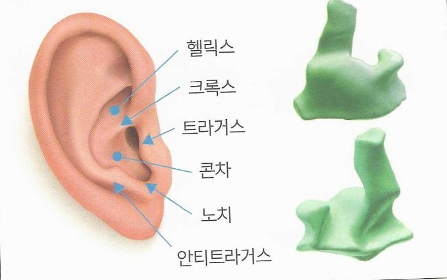

| 업체명 | 새봄보청기(수원) |
| 업체코드 | |
| 주문일 | 20년월일 |
| 출고요청일 | 20년월일 |
| 고객명 | |
| 성별 | 남여 |
| 연령 | 세 |
| 모델명 | |
| 일련번호 | Ⓡ |
| Ⓛ |
전화
상담
고객관리팀제작수리
수리비 발생시 전화 요망(미 체크시 수리 진행)
통증 부분, 헐거운 부분, 타이트한 부분을
그림에 표시 하십시오.

보청기 상태 (고장내역)
보청기의 증상
작동이 안됨잡음 심함
배터리 소모가 많음소리가 울림
내부 피드백 발생프로그램 연결 불량
충전 불량음질상태 불량
간헐적 작동청소/점검
출력 약함
FACEPLATE(플레이트) 및 하우징(보청기 외부)의 상태
볼륨조절기 불량배터리 도어핀 불량
하우징 불량배터리 도어 불량
손잡이 파손쉘·플레이트 분리
Hook(후크) 불량MMB, 스위치 불량
마이크 커버 파손
Shell의 상태
Canal 부분 김Canal 부분 짧음
튀어나옴헐거움
쉘 타이트함쉘 통증
깨지거나 금이 감쉘 코팅요망
외부 피드백 발생색상 교체
옵션 추가·변경
VENTING (벤트 작업)
No VentPressure Vent
Small VentMedium Vent
Large Vent
FACEPLATE OPTIONS (플레이트 옵션)
RH 직선형 손잡이 (희망길이mm)
RL 고리형 손잡이 (희망길이mm)
MISC. OPTIONS (각종 옵션)
EXR (튜브를 길게 작업)
BWG (귀지방지 스프링)
WH (마이크 바람막이)
HCK (귀지방지망)
VOLUME OPTION (VC 옵션)
NVC (볼륨 제거)
2W (2단 볼륨)
OW (스크류 볼륨)
VC (손 볼륨)
DC (디지털 볼륨)
MMB (멀티메모리, 추가비용 발생)
요청 사항 및 기타 증상 내역을 구체적으로 작성 부탁드립니다.